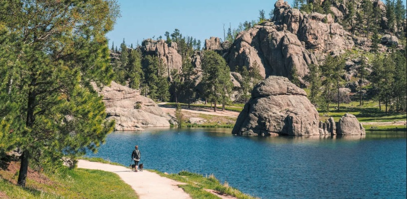

Tranquilidade e segurança
Um ambiente agradável para passar o dia, reunir pessoas queridas ou simplesmente aproveitar um momento de paz.

Um espaço para respirar fundo, apreciar a natureza e criar momentos inesquecíveis.
Descobrir o parqueFundado em 1992, o Parque Estadual Ilha Bela foi pensado como um destino para quem deseja desacelerar e aproveitar momentos especiais em meio à natureza.
Entre paisagens marcantes, espaços tranquilos e diferentes possibilidades de lazer, o parque oferece uma experiência agradável para famílias, amigos e visitantes que preferem explorar o ambiente com calma.
Alguns dos destaques que tornam a visita especial.
Um ambiente agradável para passar o dia, reunir pessoas queridas ou simplesmente aproveitar um momento de paz.
Diferentes cenários naturais tornam cada caminhada uma oportunidade para descobrir novos lugares e registrar boas memórias.
A entrada no parque é gratuita. Algumas atividades específicas podem possuir regras ou custos próprios.
Entre em contato para obter mais informações sobre o parque e suas atividades.